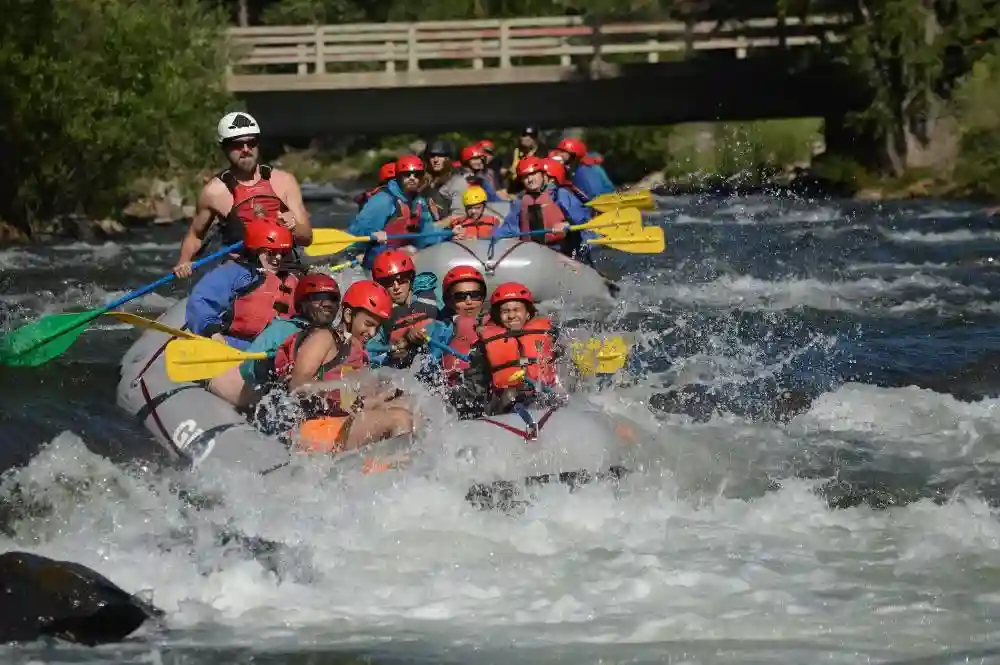
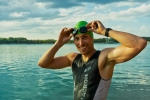
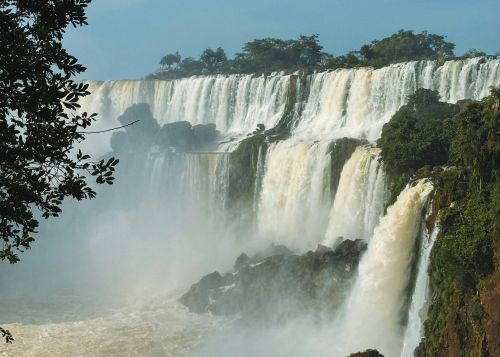

White Water Rafting Co.
History
It all started with a single descent down the 'Devil's Throat' rapids in the summer of 1988. Since then, White Water Rafting Co. has been at the forefront of white water exploration. We've spent the last three decades mapping new routes, training the industry's best guides, and perfecting the art of the river expedition. Today, we continue that legacy of excellence on every trip we lead.
For years, the 'Devil's Throat' was considered impassable by local scouts due to its treacherous drop-offs and complex boulder gardens. It wasn't until our founders pioneered a technical line through the "left-gate" that the section became the crown jewel of the river. This breakthrough changed the landscape of regional tourism and set a new standard for whitewater expeditions in the area.
Adventure Awaits You!